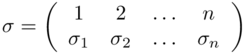
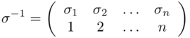
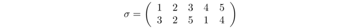
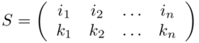
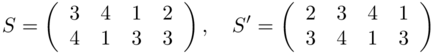

Permutazioni
Def. P.0 Sia n ∈ ℤ+ un intero positivo ed A = {a1, a2, ..., an} un insieme di n elementi. Si definisce permutazione degli elementi di A, una funzione bigettiva σ: A → A.
Una esempio di permutazione è la funzione biiettiva σ: {1, 2,..., n} → {1, 2,..., n} avente l'insieme {1, 2,..., n} come dominio e codominio, tale che per ogni i ∈ {1, 2,..., n}, esista solamente un intero j ∈ {1, 2,..., n} per il quale si abbia σ(j) = i. L'insieme di permutazione di n elementi viene indicato con Ѕn.
Data una permutazione σ ∈ Ѕn, per specificare i valori assunti dalla funzione σi= σ(i), ∀ i ∈ {1, 2,..., n} si utilizza la matrice 2 x n
in cui sotto al numero i compare l'immagine σ(i). Tale notazione non richiede che nella prima riga della matrice i numeri i numeri 1, 2, ..,n siano disposti in ordine crescente. Ad esempio la permutazione:
rappresenta la permutazione inversa σ-1.
La funzione che porta ogni elemento x a se stesso, simbolizzata con εA è detta funzione identità:
ε(x) = x, ∀x ∈ A.
Questa è chiaramente una permutazione poichè è iniettiva;
Inversioni
Definizione P.1. Consideriamo una permutazione σ ∈ Sn. Diremo che in σ è presente una inversione ogni qual volta si ha i ≤ j ma σ(i) > σ(j).
Ad esempio nella permutazione 1, 3, 2; i numeri 3 e 2 presentano un'inversione. Si consideri il seguente esempio
ci sono 5 inversioni: si ha infatti 1 ≤ 2 ma σ(1) = 3 > σ(2) = 2, 1 ≤ 4 ma σ(1) = 3 > σ(4) = 1, 2 ≤ 4 ma σ(2) = 2 > σ(4) = 1, 3 ≤ 4 ma σ(3) = 5 > σ(4) = 1 e 3 ≤ 5 ma σ(3) = 5 > σ(5) = 4. Si noti che per contare il numero di inversioni di σ basta osservare che nella seconda riga della tabella il numero 3 compare prima dei numeri 2 e 1 (due inversioni), 2 viene prima di 1 (un’altra inversione) e infine il 5 precede i numeri 1 e 4 (altre due inversioni).
Nella permutazione 3, 2, 1, 4. dei numeri 1, 2, 3, 4, l'elemento 3 presenta due inversioni (con 1 e 2), l'elemento 2 presenta una inversione con 1. Quindi il numero totale di inversione è 2 + 1 = 3. Quindi una permutazioni di n elementi si dice di classe pari o di classe dispari a seconda che essa presenti rispettivamente un numero pari o dispari di inversioni.
Def. P.2. Diremo che σ ∈ Sn è una permutazione pari (risp. dispari ) se il numero di inversioni presenti in σ è pari (risp. dispari). Definiamo inoltre il segno di σ, indicato con sgn(σ), ponendo

In altri termini si ha
sgn(σ) = (−1)i(σ)
dove i(σ) è il numero di inversioni presenti in σ
Teorema P.3 Scambiando fra di loro due elementi di una permutazione, queste cambia di classe, quindi se è pari diventa dispari e viceversa.
Se i1, i2,..., in e k1, k2, ..., kn sono due permutazioni che indichiamo con P e P' dei n numeri 1, 2, ..., n, l'operazione S che fa passare dalla permutazione P a P', con la quale cioè gli elementi di i1, i2, ..., in vengono sostituiti da k1, k2, ..., kn si chiama sostituzione e si indica con la matrice 2 × n:
due sostituzioni sono uguali se producono lo stesso effetto sugli n numeri della permutazione, ad esempio le sostituzioni:
sono uguali, giacchè entrambe sostituiscono 3 con 4, 4 con 1, 1 con 3 e 2 con 3.
Supponendo che la permutazione di partenza sia quella fondamentale (1, 2, 3,..,n) si può indicare una generica sostituzione con la notazione: